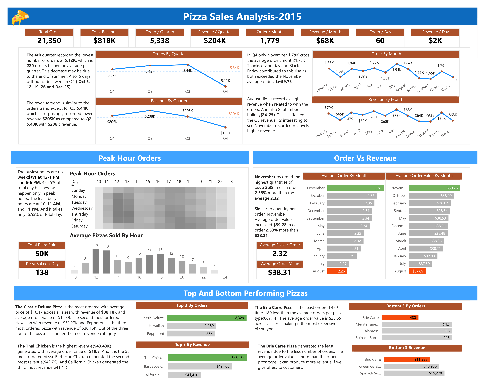
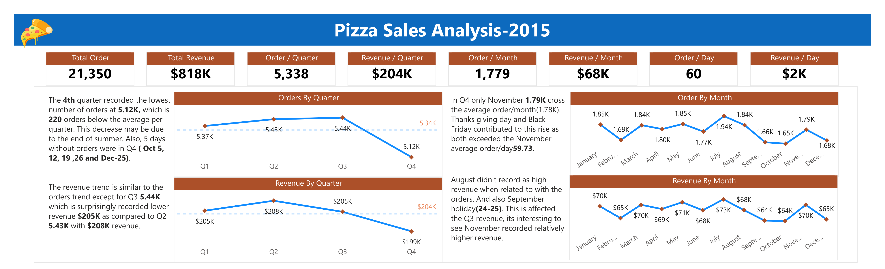
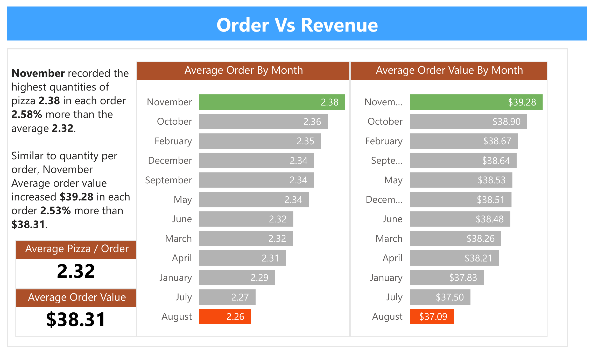
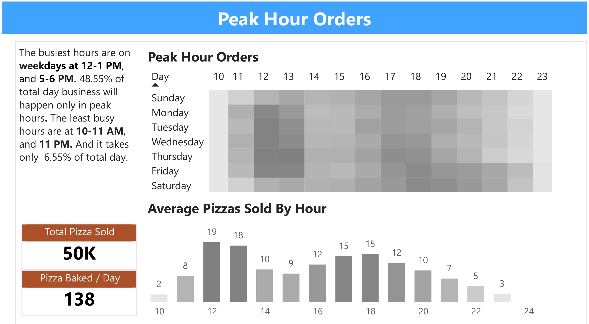
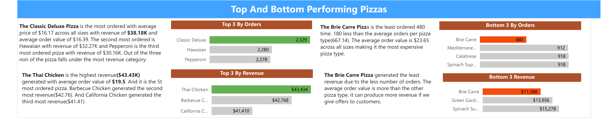

Pizza Sales Analysis-2015
Description:
The project provides insights and recommendations for improving the operations of a pizza restaurant. It includes data with 48,620 rows detailing order specifics, order dates, pizza types, and sizes. By analyzing key metrics such as total orders, total revenue, peak hour demand, and the popularity of different pizzas, the project offers valuable information. This analysis is performed using data modeling and visualization techniques in Power BI.
Objective:
The objective of analyzing pizza sales is to optimize business performance by identifying trends and patterns in customer preferences, peak sales periods, and product popularity. This analysis helps in making informed decisions to increase revenue, enhance customer satisfaction, streamline operations, and effectively manage inventory.
In this project, the role of a data analyst is assumed to optimize the operational efficiency of a pizza restaurant using its data.
The project seeks to address the following questions:
- What are the corelation between total order and total revenue?
- Which are the factors affecting the orders and revenue?
- When are the busiest days and times?
- How many pizzas are made during peak hours?
- Which pizzas are the most and least orderd?
- How effectively is the seating capacity being utilized?
Source: https://www.kaggle.com/
Data Story:

Order Value And Revenue Analysis:
This can be understood by examining the line charts:
- The highest number of orders was recorded in Q3, while the lowest occurred in Q4.
- The highest revenue was recorded in Q2, while the lowest was in Q4.
- Out of the 12 months, 4 months had order counts below the monthly average.
- Out of the 12 months, 4 months had revenue counts below the monthly average.


Key Insights: The 4th quarter recorded the lowest number of orders, totaling 5.12K, which is 220 orders below the quarterly average. This decline may be attributed to the end of summer. Additionally, there were 5 days in Q4 without any orders (October 5, 12, 19, 26, and December 25), which could account for approximately 300 fewer orders, yet we observed only a 220-order shortfall.
In Q4, only November surpassed the average monthly order volume of 1.78K, achieving a total of 1.79K orders. November also recorded the highest pizza quantity per order, averaging 2.38, which is 2.58% more than the average of 2.32. Similarly, the average order value increased to $39.28, 2.53% higher than the average of $38.31. This increase was driven by significant contributions from Thanksgiving and Black Friday, which saw the highest daily order counts of 113 and 115, respectively. These events enabled November to exceed its average daily order count of 59.73.
The revenue trend is similar to the orders trend except for Q3 (5.44K orders) which is surprisingly recorded lower revenue ($205K) as compared to Q2 (5.43K orders) with ($208K) revenue.
In August, the quantity of pizza ordered averaged 2.26 per order, which is 2.58% below the average of 2.32. Similarly, the average order value dropped to $37.09, a decrease of 3.18% compared to the average of $38.31. This decline may be attributed to people preferring outdoor dining during the summer rather than ordering pizza. Additionally, the holidays on September 24 and 25 likely impacted Q3 revenue.
Recommendations: Offering reward cards can encourage repeat customers, which in turn can boost the number of orders.
During the fourth quarter, which includes festival and holiday periods when families are more likely to gather, offering family pack pizza deals could increase both orders and revenue.
Peak Sales Time Analysis:
This can be understood by examining the heat map and bar chart:
- Peak Hours are between 12-1 pm and 5-6 pm
- Weekdays highest pizzas are sold at lunch
- Weekends tend to have more customers in the evning.
- The least pizza sold are at 10-11am and 11pm

Key Insights: The average pizza baked per day is 138.47. The peak hours on weekdays are from 12-2 pm and 5-6 pm, accounting for 48.14% of daily pizza sales, with 15 orders generating $610 in revenue. In contrast, the slowest times are at 10 am and 11 pm, making up just 3.65% of daily sales, with 2 orders bringing in $86. On weekends, the busiest periods are in the evening.
The restaurant operates from 11 am to 11 pm during January, August, and December, while in the other nine months, it opens at 10 am. Notably, on November 24th, the restaurant received an order as early as 9:52 am. Throughout the rest of the year (excluding January, August, and December), only six orders were placed at 10 am, indicating that the restaurant typically receives few orders around that time.
During peak hours, the average number of pizzas sold per order is 2.69, which is higher than the overall average of 2.32 pizzas per order. This suggests that customers are typically purchasing between 2 and 3 pizzas per order, indicating that each order might be serving 2 to 3 people.
Recommendations:
To boost sales during lunch hours, introducing a lunchtime combo deal would be effective. Similarly, weekend promotions can drive increased sales on weekends.
Given the low number of orders at 10 am and 11 pm, it would be more efficient to adjust the restaurant's hours by opening at 11 am year-round..
Since each order typically serves 2 to 3 customers, it's advisable to have mostly 2-seater tables with a few 3-seater tables available.
Top and Bottom Performing Pizzas Analysis:
This can be understood by examining the bar chart:
- The Classic Deluxe Pizza is the most ordered item, with a total of 2,329 orders.
- The Thai Chicken Pizza generated the highest revenue, totaling $43,434.
- The Brie Carre Pizza is the least ordered item, with a total of 400 orders.
- The Brie Carre Pizza generated the least revenue, totaling $11,588.

Key Insights: The Classic Deluxe Pizza is the most ordered item, with an average price of $16.17 across all sizes, generating $38.18K in revenue and an average order value of $16.39. The second most ordered pizza is the Hawaiian, with $32.27K in revenue, followed by the Pepperoni, which brought in $30.16K. Despite their popularity, none of these pizzas fall into the highest revenue category because their average order values are lower than that of the Thai Chicken Pizza, which stands at $19.50.
The Thai Chicken is the highest revenue($43.43K) generated with average order value of $19.5. And it is the 5th most ordered pizza. Barbecue Chicken generated the second most revenue($42.76). And California Chicken generated the third most revenue($41.41)
The Brie Carre Pizza is the least ordered 480 time. 180 less than the average orders per pizza type(667.14). The average order value is $23.65 across all sizes making it the most expensive pizza type.
The Brie Carre Pizza generated the least revenue due to the less number of orders. The average order value is more than the other pizza type. it can produce more revenue if we give offers to customers.
Recommendations: Consider removing the Brie Carre Pizza from the menu. However, given its average order value of $23.65, which is higher than other pizzas, we might recommend promoting it more effectively. One option is to offer a deal where customers can buy the Brie Carre Pizza and receive a less expensive pizza for free, thereby encouraging more frequent purchases of the Brie Carre Pizza.
Encouraging customers to purchase Thai Chicken, Barbecue Chicken, and California Chicken pizzas through special offers could boost their rankings among the top-ordered items.